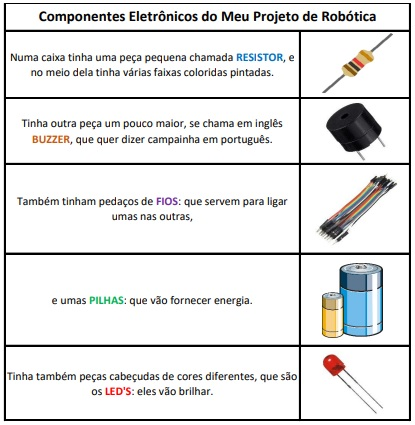

Estou na EMEB Júlio de Grammont desde 2017, junto com parceria da professora Valquiria levamos o uso das tecnologias da melhor maneira possivel aos nossos alunos, sempre aprimorando nossos conhecimentos e integrando com as demais atividades do cotidiano escolar.
Este é o link do blog da nossa escola: BLOG.JG
